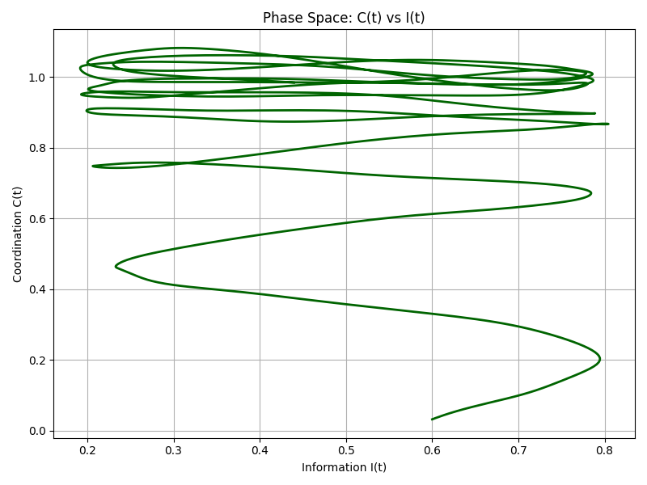

Overview
This project explores the "Hard Problem of Consciousness" - the enigmatic question of how and why physical brain processes give rise to subjective experience. Through mathematical modeling and visualization, we simulate the emergence of qualia (subjective conscious experiences) from information processing dynamics.
Our approach models consciousness as an emergent property arising from the dynamic interplay of information flow, metastability, and coordination dynamics in complex systems.
Paper: Bridging the Hard Problem
Abstract
A concise summary introducing the hard problem of consciousness, the role of information in neural excitation, and the hypothesis that metastable neurodynamics, informed by information theory, may provide insights into subjective experience. Briefly outline the key arguments, including a discussion of altered states like flow and their implications for understanding consciousness.
Introduction
The human brain is a biological system uniquely equipped to process, integrate, and respond to vast amounts of information, enabling complex cognitive functions and adaptive behavior. Yet, the neural mechanisms underlying consciousness—the foundation of subjective experience—remain one of the greatest enigmas in science. The hard problem of consciousness, first articulated by Chalmers (1995), highlights the profound explanatory gap between the physical processes of the brain and the subjective quality of experience, or qualia. While neuroscience has made significant strides in mapping the neural correlates of consciousness (NCC)—including specific brain regions and network dynamics linked to awareness (Koch et al., 2016)—the mechanisms by which these physical processes generate the ineffable "what it feels like" aspect of conscious experience remain elusive. This divide underscores the challenge of moving from descriptive correlates to causative models that can account for the emergence of subjectivity.
Theoretical frameworks such as Integrated Information Theory (IIT) (Tononi, 2008) and Global Workspace Theory (GWT) (Dehaene & Changeux, 2011) have advanced our understanding of consciousness by conceptualizing it as an emergent property of complex neural activity. IIT quantifies consciousness as the degree of integrated information within a system, providing a mathematical lens for analyzing its structure and complexity (Balduzzi & Tononi, 2008). In contrast, GWT emphasizes the role of a central "workspace" that globally broadcasts information to various cognitive modules, enabling processes such as attention, decision-making, and memory (Baars, 1988). Despite their contributions, these models fall short of addressing a critical question: why does such intricate information processing give rise to the subjective phenomena of consciousness? Tackling this question demands a paradigm shift, integrating insights from neuroscience, information theory, quantum physics, and philosophy to address the ontological roots of experience (Northoff & Lamme, 2020).
While classical theories of consciousness often emphasize localized brain activity or global coordination, recent advances in network neuroscience suggest that dynamic, metastable states play a pivotal role. Metastability refers to transient configurations of neural activity that balance stability and adaptability, enabling seamless transitions between functional states (Tognoli & Kelso, 2014). These dynamic patterns allow the brain to flexibly integrate and process information while maintaining coherence—a property likely central to the emergence of consciousness. This paper posits that consciousness arises as an emergent phenomenon from these metastable states of neural activity, where information processing achieves a delicate equilibrium between order and chaos.
Mathematical Model
Our computational approach models consciousness through a set of coupled differential equations that capture the dynamics of information processing, metastability, and coordination in complex systems.
Core Components
- Information Flow (I): Represents the flow of sensory and neural information
- Metastability (M): Captures the balance between integration and segregation
- Coordination Dynamics (C): Models the orchestration of activity across distributed regions
- Qualia Potential (Q): The accumulated potential for conscious experience
Governing Equations
When Q(t) exceeds threshold θ, qualia (conscious experience) emerges.
Key Parameters
- α: Coupling strength between information and metastability
- β: Decay rate of coordination dynamics
- I_max: Maximum information capacity
- θ: Qualia threshold
Visualizations
Phase Space Projection
2D projection showing the relationship between Information (I) and Coordination (C) dynamics.
3D Attractor
3D visualization of the attractor dynamics between Information (I), Metastability (M), and Coordination (C).
Animated Trajectory

Animation showing the system's trajectory through phase space, revealing the complex, non-linear dynamics that may underlie conscious experience.
Simulations
Our simulations explore how different parameter values affect the dynamics of consciousness. By adjusting parameters such as coupling strength (α), decay rate (β), information capacity (I_max), and qualia threshold (θ), we can observe various regimes of behavior:
High Coupling Strength (α)
Increases the influence of information on coordination dynamics, potentially leading to more rapid transitions between states and heightened sensitivity to information.
Low Decay Rate (β)
Results in more persistent coordination dynamics, potentially corresponding to sustained conscious states with greater temporal stability.
Low Qualia Threshold (θ)
Leads to more frequent activation of qualia, potentially modeling heightened states of awareness or altered consciousness.
The code for these simulations is available in our GitHub repository.
References
- Baars, B. J. (1988). A cognitive theory of consciousness. Cambridge University Press.
- Balduzzi, D., & Tononi, G. (2008). Integrated information in discrete dynamical systems: Motivation and theoretical framework. PLoS Computational Biology, 4(6), e1000091.
- Chalmers, D. J. (1995). Facing up to the problem of consciousness. Journal of Consciousness Studies, 2(3), 200–219.
- Dehaene, S., & Changeux, J. P. (2011). Experimental and theoretical approaches to conscious processing. Neuron, 70(2), 200–227.
- Fries, P. (2005). A mechanism for cognitive dynamics: Neuronal communication through neuronal coherence. Trends in Cognitive Sciences, 9(10), 474–480.
- Hubel, D. H., & Wiesel, T. N. (1962). Receptive fields, binocular interaction, and functional architecture in the cat's visual cortex. Journal of Physiology, 160(1), 106–154.
- Koch, C., Massimini, M., Boly, M., & Tononi, G. (2016). Neural correlates of consciousness: Progress and problems. Nature Reviews Neuroscience, 17(5), 307–321.
- Northoff, G., & Lamme, V. A. (2020). Neural mechanisms for predicting the consciousness state from brain activity in humans. Nature Reviews Neuroscience, 21(10), 595–608.
- Tognoli, E., & Kelso, J. A. S. (2014). The metastable brain. Neuron, 81(1), 35–48.
- Tononi, G. (2008). Consciousness as integrated information: A provisional manifesto. The Biological Bulletin, 215(3), 216–242.